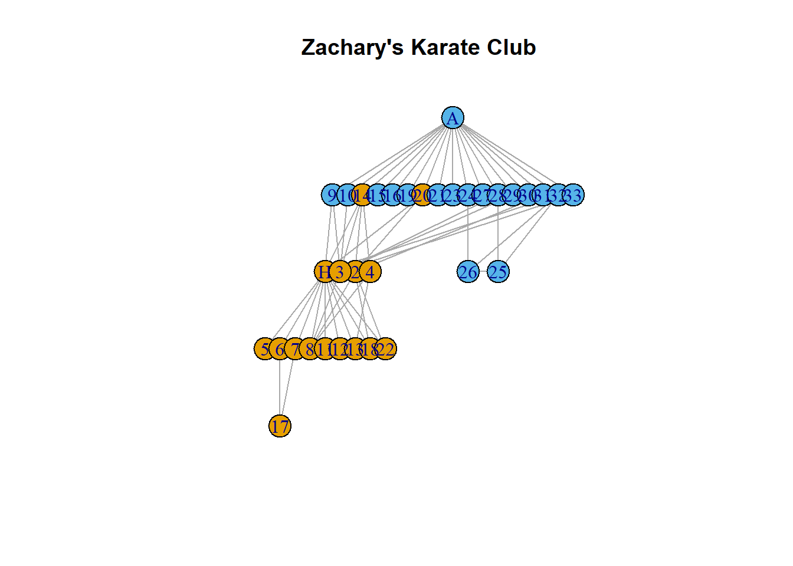

Network analaysis basics with iGraph
Network analysis allows us to take a qualitative look at a system
Network analysis is the study of interactions within a system. A network, or graph, is comprised of nodes, the objects of study, and edges, the interactions betwee nodes.
iGraph basics
We’re going to start learning about network theory with the Zachary’s Karate Club dataset:
library(igraph)
library(igraphdata)
library(tidyverse)
data(karate)
theme_set(theme_light())
src("src/utils.R")(Note: you can reproduce Zachary’s Karate network with igraph::make_graph("Zachary"), but it doesn’t have as much metadata as the version that comes with igraphdata)
Let’s do some basic igraph stuff. Let’s see what an igraph object looks like:
karate## IGRAPH 4b458a1 UNW- 34 78 -- Zachary's karate club network
## + attr: name (g/c), Citation (g/c), Author (g/c), Faction (v/n),
## | name (v/c), label (v/c), color (v/n), weight (e/n)
## + edges from 4b458a1 (vertex names):
## [1] Mr Hi --Actor 2 Mr Hi --Actor 3 Mr Hi --Actor 4
## [4] Mr Hi --Actor 5 Mr Hi --Actor 6 Mr Hi --Actor 7
## [7] Mr Hi --Actor 8 Mr Hi --Actor 9 Mr Hi --Actor 11
## [10] Mr Hi --Actor 12 Mr Hi --Actor 13 Mr Hi --Actor 14
## [13] Mr Hi --Actor 18 Mr Hi --Actor 20 Mr Hi --Actor 22
## [16] Mr Hi --Actor 32 Actor 2--Actor 3 Actor 2--Actor 4
## [19] Actor 2--Actor 8 Actor 2--Actor 14 Actor 2--Actor 18
## + ... omitted several edgesThere’s a lot of information here, but let’s focus on the attr line. This tells us the following things:
name (g/c)is an attribute of the graph itself, stored as characters. The same applies forCitationandAuthor.Faction (v/n)tells us that the vertices have a numeric attribute corresponding to the faction the vertex belongs to. Similarly, vertices have names, labels, and colors.weight (e/n)tells us that the edges have a number assigned to them according to some weight.
Let’s start examining more attributes of the graph. We can get the order of the graph, which tells us the number of vertices it has:
gorder(karate)## [1] 34Similarly, the size of the graph tells us how many edges there are:
gsize(karate)## [1] 78Let’s type in We can get a list of the nodes in the graph by doing the following:
V(karate)## + 34/34 vertices, named, from 4b458a1:
## [1] Mr Hi Actor 2 Actor 3 Actor 4 Actor 5 Actor 6 Actor 7
## [8] Actor 8 Actor 9 Actor 10 Actor 11 Actor 12 Actor 13 Actor 14
## [15] Actor 15 Actor 16 Actor 17 Actor 18 Actor 19 Actor 20 Actor 21
## [22] Actor 22 Actor 23 Actor 24 Actor 25 Actor 26 Actor 27 Actor 28
## [29] Actor 29 Actor 30 Actor 31 Actor 32 Actor 33 John AWe can access individual vertices by index…
V(karate)[1:5]## + 5/34 vertices, named, from 4b458a1:
## [1] Mr Hi Actor 2 Actor 3 Actor 4 Actor 5…or by name.
V(karate)["Mr Hi"]## + 1/34 vertex, named, from 4b458a1:
## [1] Mr HiWe can also access multiple vertices at once by name:
V(karate)[c("Mr Hi", "John A", "Actor 7")]## + 3/34 vertices, named, from 4b458a1:
## [1] Mr Hi John A Actor 7We can see a list of the attributes of each vertex with vertex.attributes…
vertex.attributes(karate)## $Faction
## [1] 1 1 1 1 1 1 1 1 2 2 1 1 1 1 2 2 1 1 2 1 2 1 2 2 2 2 2 2 2 2 2 2 2 2
##
## $name
## [1] "Mr Hi" "Actor 2" "Actor 3" "Actor 4" "Actor 5" "Actor 6"
## [7] "Actor 7" "Actor 8" "Actor 9" "Actor 10" "Actor 11" "Actor 12"
## [13] "Actor 13" "Actor 14" "Actor 15" "Actor 16" "Actor 17" "Actor 18"
## [19] "Actor 19" "Actor 20" "Actor 21" "Actor 22" "Actor 23" "Actor 24"
## [25] "Actor 25" "Actor 26" "Actor 27" "Actor 28" "Actor 29" "Actor 30"
## [31] "Actor 31" "Actor 32" "Actor 33" "John A"
##
## $label
## [1] "H" "2" "3" "4" "5" "6" "7" "8" "9" "10" "11" "12" "13" "14"
## [15] "15" "16" "17" "18" "19" "20" "21" "22" "23" "24" "25" "26" "27" "28"
## [29] "29" "30" "31" "32" "33" "A"
##
## $color
## [1] 1 1 1 1 1 1 1 1 2 2 1 1 1 1 2 2 1 1 2 1 2 1 2 2 2 2 2 2 2 2 2 2 2 2…and we can access that attribute from a particular node by doing using $:
V(karate)[34]$name## [1] "John A"We can access edges in a similar way:
E(karate)## + 78/78 edges from 4b458a1 (vertex names):
## [1] Mr Hi --Actor 2 Mr Hi --Actor 3 Mr Hi --Actor 4
## [4] Mr Hi --Actor 5 Mr Hi --Actor 6 Mr Hi --Actor 7
## [7] Mr Hi --Actor 8 Mr Hi --Actor 9 Mr Hi --Actor 11
## [10] Mr Hi --Actor 12 Mr Hi --Actor 13 Mr Hi --Actor 14
## [13] Mr Hi --Actor 18 Mr Hi --Actor 20 Mr Hi --Actor 22
## [16] Mr Hi --Actor 32 Actor 2--Actor 3 Actor 2--Actor 4
## [19] Actor 2--Actor 8 Actor 2--Actor 14 Actor 2--Actor 18
## [22] Actor 2--Actor 20 Actor 2--Actor 22 Actor 2--Actor 31
## [25] Actor 3--Actor 4 Actor 3--Actor 8 Actor 3--Actor 9
## [28] Actor 3--Actor 10 Actor 3--Actor 14 Actor 3--Actor 28
## + ... omitted several edgesAnd to find edge attributes:
edge.attributes(karate)## $weight
## [1] 4 5 3 3 3 3 2 2 2 3 1 3 2 2 2 2 6 3 4 5 1 2 2 2 3 4 5 1 3 2 2 2 3 3 3
## [36] 2 3 5 3 3 3 3 3 4 2 3 3 2 3 4 1 2 1 3 1 2 3 5 4 3 5 4 2 3 2 7 4 2 4 2
## [71] 2 4 2 3 3 4 4 5We can do a basic visualization:
plot.igraph(karate,
main = "Zachary's Karate Network")We can have the size of the node reflect its degree:
plot(karate,
vertex.size = degree(karate) * 1,
main = "Zachary's Karate Club"
)Finally, we can try out other layouts:
plot(karate,
layout = layout_as_tree(karate),
main = "Zachary's Karate Club")
Exercise 1.1
- What do the nodes represent?
- What do the edges represent? How are they weighted?
- What’s the difference between a directed and an undirected graph? What kind of graph is
karate? - Enter
karate[]into your console. What is that? - Plot
karateagain usinglayout_in_circleand scaling the width of each edge by its weight.
Graph connectivity
A common question in network analysis is to figure out how the degrees in a graph are distributed. We say two nodes are connected if there is an edge between them - that is, if the two objects represented by the nodes interact with each other. We define the degree of a node as the number of other nodes that the graph is connected it. We can look at the degrees of each node in the graph using degree:
degree(karate)## Mr Hi Actor 2 Actor 3 Actor 4 Actor 5 Actor 6 Actor 7 Actor 8
## 16 9 10 6 3 4 4 4
## Actor 9 Actor 10 Actor 11 Actor 12 Actor 13 Actor 14 Actor 15 Actor 16
## 5 2 3 1 2 5 2 2
## Actor 17 Actor 18 Actor 19 Actor 20 Actor 21 Actor 22 Actor 23 Actor 24
## 2 2 2 3 2 2 2 5
## Actor 25 Actor 26 Actor 27 Actor 28 Actor 29 Actor 30 Actor 31 Actor 32
## 3 3 2 4 3 4 4 6
## Actor 33 John A
## 12 17There are a few ways we can access the highest degree nodes. If we just want the single highest node, we can do:
which.max(degree(karate))## John A
## 34If we wanted, say, the 5 highest nodes, we can do:
sort(degree(karate)) %>%
tail(5)## Actor 2 Actor 3 Actor 33 Mr Hi John A
## 9 10 12 16 17Suppose we wanted all those nodes with degree higher than 4. We can than do:
degree(karate)[degree(karate) > 4]## Mr Hi Actor 2 Actor 3 Actor 4 Actor 9 Actor 14 Actor 24 Actor 32
## 16 9 10 6 5 5 5 6
## Actor 33 John A
## 12 17iGraph has a degree.distribution function that returns the proportion of nodes of each degree.
degree.distribution(karate)## [1] 0.00000000 0.02941176 0.32352941 0.17647059 0.17647059 0.08823529
## [7] 0.05882353 0.00000000 0.00000000 0.02941176 0.02941176 0.00000000
## [13] 0.02941176 0.00000000 0.00000000 0.00000000 0.02941176 0.02941176We can get a quick visualization of this distribution via plot:
plot(degree.distribution(karate))We can use plot_dd from the utils file to make it a bit prettier.
plot_dd(karate)
The neighborhood of a node is the set of nodes that are connected to it. For instance, to see the neighborhood of Mr Hi, we can do:
neighbors(karate, "Actor 7")## + 4/34 vertices, named, from 4b458a1:
## [1] Mr Hi Actor 5 Actor 6 Actor 17Exercise 1.2
- The general intuition is that those nodes that have a higher degree are more important than those nodes with a lower degree connectivity.
- Refer back to the plot of the degree distribution of the network. There are two clear outliers in terms of degree connectivity. Who are they? Does this make sense?
- Find the neighborhoods of the nodes with the highest degree. Use
intersectto find the overlap between these two neighborhoods. What did you find? Does this make sense? What are some questions you may have about this overlap? - For the
karatenetwork, it is easy to pick out those nodes that have a “high” degree connectivity. However, suppose that your degree distribution looked like the graph below. How would you decide a cutoff for a node to have “high” degree connectivity?

Graph clustering
Another common technique in network analysis is graph clustering. The aim of graph clustering is to find subsets of nodes within a graph that are related. *iGraph comes with several clustering algorithms. For example, we can use cluster_fast_greedy to cluster the karate network:
karate.cfg <- cluster_fast_greedy(karate)
plot(karate.cfg,
karate)Exercise 1.3
- How do you interpret the previous plot? Does this make sense given the system of study?
- Try out other clustering algorithms and see if you can get equal or better results as above.
- It’s easy to find an algorithm and apply it to your network to try and find some structure. What are some things you should keep in mind when applying clustering algorithms to a nentwork?
Paul Villanueva
Ph.D. Student - Bioinformatics and Computational Biology
Iowa State University, Ames, IA.